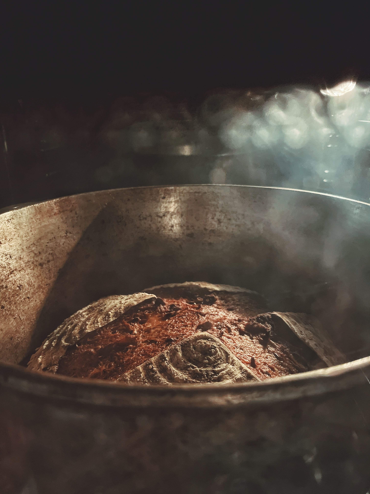
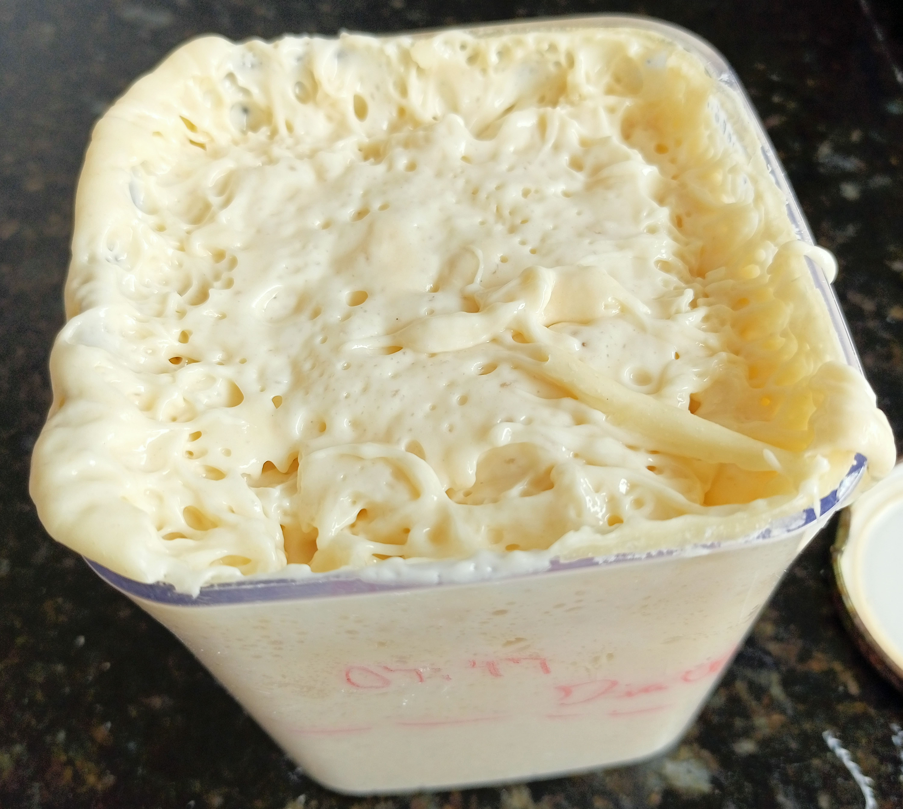

Temos um objetivo compartilhado..
Nós somos entusiastas e defensores da longa fermentação, nossos pães são feitos com ótimos processos, ingredientes que você conhece, fermentação natural, e principalmente tempo, com isso produzimos pães nutritivos e de fácil digestão.
Gostamos muitos de jogos de RPG, daí vem a inspiração dos nomes e descrição de algumas das receitas e da temática medieval.

O "Levain"
Este é nosso taverneiro, o Levain! O fermento natural que dá vida aos nossos pães. Ele é uma cultura de leveduras em uma mistura de farinha e água, com presença de lactobacilos que vão se alimentando das proteínas da farinha e dos nutrientes da água e assim gerando atividade para realizar a fermentação.